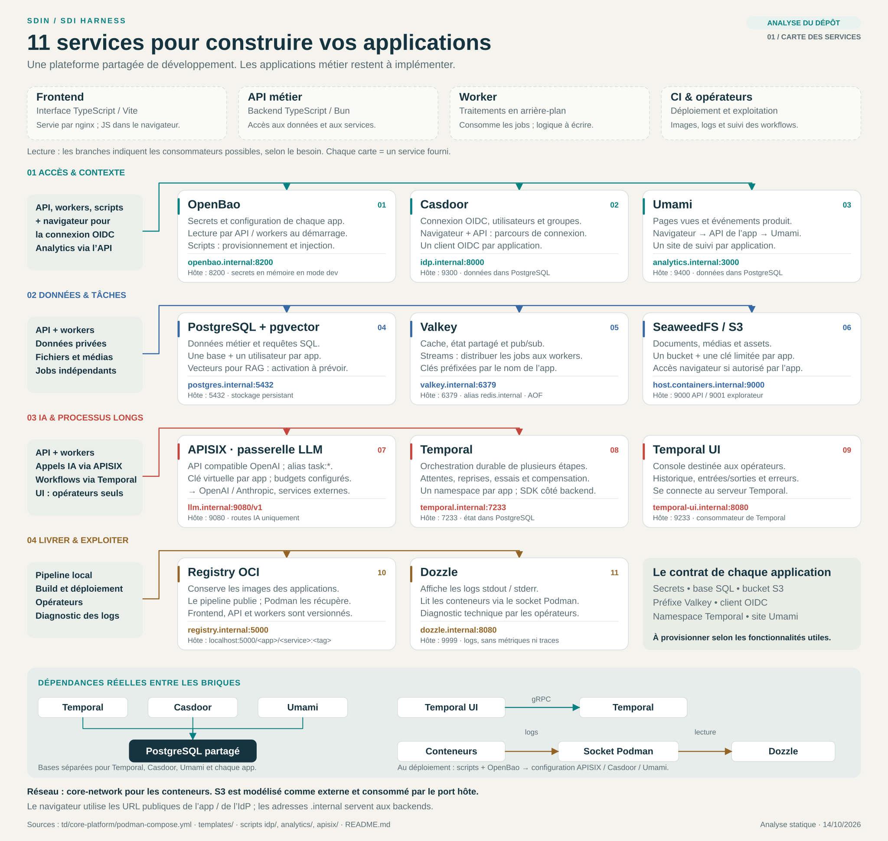
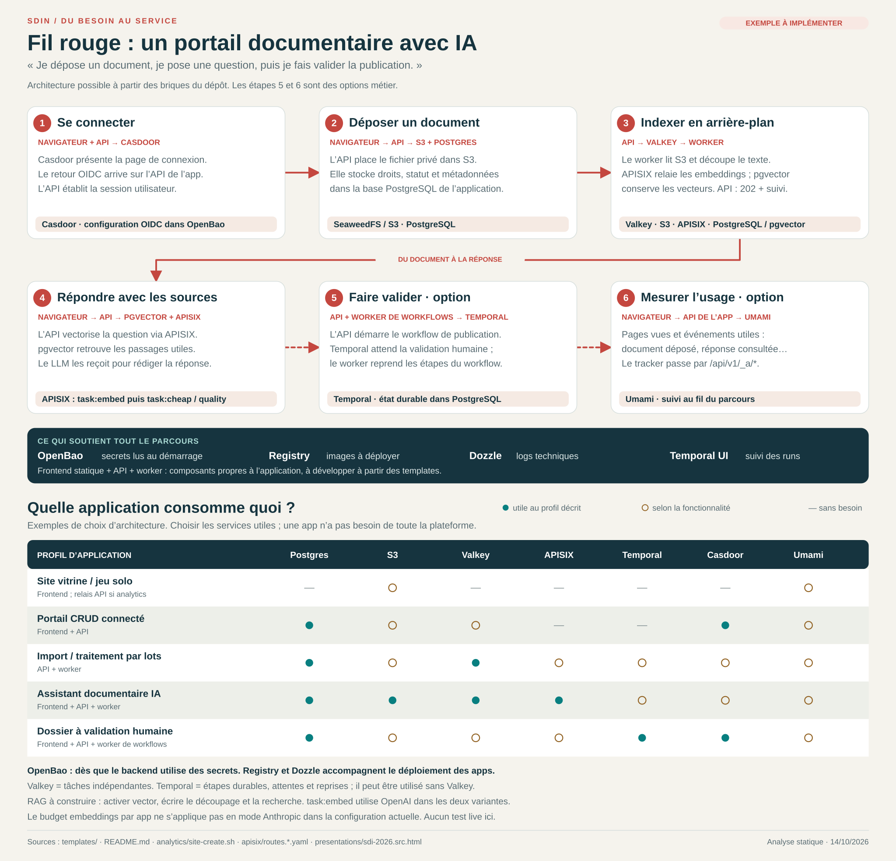

Site statique ou jeu solo
Frontend seul. Aucun service métier de la plateforme n’est nécessaire par défaut.
Registry pour distribuer l’image ; Dozzle pour consulter les logs du conteneur. Ajouter un relais API si l’on choisit Umami.Lecture du repository · 14 octobre 2026
Ce repository définit 11 briques de plateforme, des scripts de provisionnement et des templates d’applications. Il fournit un socle de développement et d’atelier ; aucune application métier n’y est implémentée.
Les services partagés, leurs dépendances et les outils de déploiement et d’exploitation.

APISIX est la passerelle LLM. Elle expose une API compatible OpenAI, des alias de modèles, une clé virtuelle par app et des budgets configurés. La configuration fournie ne l’utilise pas comme point d’entrée général du frontend ou de l’API métier.
Ces cinq profils sont illustratifs. Le template propose frontend, API et worker, et demande de retirer les composants inutiles.
Frontend seul. Aucun service métier de la plateforme n’est nécessaire par défaut.
Registry pour distribuer l’image ; Dozzle pour consulter les logs du conteneur. Ajouter un relais API si l’on choisit Umami.Frontend + API. Postgres pour les données, Casdoor pour la connexion, OpenBao pour les secrets.
S3 si pièces jointes ; Umami si mesure des usages.API + worker. Valkey Streams distribue les jobs ; Postgres conserve leur statut ; S3 héberge les fichiers.
Le frontend est facultatif. Le worker ne reçoit pas les requêtes utilisateur.Frontend + API + indexation. S3, Postgres/pgvector et APISIX pour retrouver et exploiter des documents.
Valkey si indexation asynchrone. Le RAG reste à implémenter dans l’app.API + worker de workflows. Temporal coordonne les étapes, attentes longues, reprises et compensations.
Casdoor pour les acteurs ; Postgres et S3 selon les données du dossier.Valkey et Temporal répondent à deux besoins distincts. Valkey Streams répartit des unités de travail indépendantes. Temporal conserve la progression d’un processus qui attend, réessaie ou reprend après interruption. Un besoin simple ne justifie pas automatiquement les deux.
Un portail documentaire possible, pour relier les briques à un parcours utilisateur concret.

nginx sert les fichiers de la SPA. Son JavaScript s’exécute dans le navigateur, hors du réseau de conteneurs. Les noms *.internal sont destinés aux composants backend sur core-network.
Le template transmet les accès OpenBao, Valkey, Postgres et S3 à l’API et au worker. Le port exposé du worker ne sert qu’à vérifier son état.
SeaweedFS fournit l’API S3 sans alias s3.internal. Un conteneur utilise host.containers.internal:9000 ; le navigateur ou l’hôte utilise localhost:9000.
Chaque app reçoit un bucket et une clé limitée à ce bucket. La lecture publique est optionnelle. Pour un document privé, l’app doit organiser l’accès ; le dépôt ne fournit pas ce parcours métier.
Casdoor fournit l’authentification OIDC avec un client par app et une URL de retour publique. Les secrets de configuration restent côté serveur.
Pour Umami, le contrat prévoit les chemins de l’app /api/v1/_a/t.js et /api/v1/_a/send, relayés vers analytics.internal:3000. Le navigateur ne contacte pas directement l’hôte analytics.
L’image Postgres contient pgvector ; chaque app doit activer l’extension dans sa propre base. Le découpage des documents, l’indexation, la recherche et la construction du contexte restent à développer.
Les routes du dépôt acheminent task:embed vers OpenAI, y compris en mode Anthropic. task:image n’est défini qu’en mode OpenAI. Les appels réels n’ont pas été vérifiés ici.
onboard-app.sh configure LLM et Temporal et régénère la passerelle. Le client OIDC et les identités de test ont leurs scripts dédiés ; analytics a aussi un script de création de site.8000–8999 aux apps, mais OpenBao utilise déjà 8200. Éviter le bloc applicatif 8200–8209.upstream n’est livré dans les templates.Les numéros de lignes permettent de retrouver les contrats et comportements dans l’état analysé du dépôt.
| Fichier et lignes | Ce qu’il établit |
|---|---|
| core-platform/README.mdLignes 3–35, 41–53, 85–101 | Plateforme agnostique, contrats par app, inventaire des 11 services et convention de ports ; OpenBao est publié sur 8200. |
| core-platform/podman-compose.ymlLignes 156–166 ; définitions des services dans l’ensemble du fichier | Configuration des conteneurs et dépendances effectives ; pgvector disponible, activation à la charge de chaque app. |
| templates/podman-compose.ymlLignes 8–13, 37–58, 62–95 | Frontend/API/worker adaptables, variables backend, endpoints S3 et rôle du port de santé du worker. |
| templates/nginx.confLignes 9–18, 22–45 | Frontend statique SPA, chemins des assets et politique de connexion à adapter à l’app. |
| templates/bootstrap.shLignes 2–25, 200–218, 231–266, 269–321 | DB, utilisateur, bucket, clés limitées et options LLM / Temporal / analytics. |
| templates/github-actions.ymlWorkflow et app.env.example ; scripts app-lifecycle.sh | Workflow d’app, réglages explicites, build et publication via app-lifecycle.sh. |
| core-platform/onboard-app.shLignes 9–22, 113–145 | Onboarding LLM / Temporal et régénération de la passerelle ; DB et bucket laissés au bootstrap de l’app. |
| idp/onboard-oidc.shLignes 26–28, 75–78, 92–101 | Client OIDC par app, flux authorization code, callback et distinction des adresses publique/interne. |
| analytics/site-create.shLignes 64–74 | Analytics relayé par les chemins de l’app, avec upstream interne Umami. |
| apisix/routes.anthropic.yamlLignes 135–148 apisix/routes.openai.yamlLignes 146–201 | Embeddings via OpenAI, limite du budget par app en mode Anthropic, route images et absence de validation live annoncée pour les embeddings. |
| core-platform/README.mdLignes 251–297, 332–400, 427–439, 473–493 | Modèle S3 externe, Valkey/Temporal, contrat LLM, portée de l’onboarding et limites de développement. |
| presentations/sdi-2026.src.htmlLignes 630–635, 701–712, 850–863 | Pattern 202/file/worker/polling, RAG avec pgvector et exemple de frontend seul lorsque cela suffit. |
Méthode : lecture des fichiers versionnés, recoupement des commentaires, scripts et templates. Aucun déploiement, provisionnement ou appel fournisseur n’a été exécuté pour cette analyse. Les exemples applicatifs sont des propositions, distinctes des services définis.